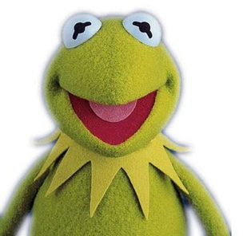

Tribute to Kermit the Frog

Kermit is a talanted preformer for a frog. Song writer, singer, stage and screen actor. He has won awards and was grand marshel. Kermit has a star on Hollywood Walk of Fame What is next on his agender? Who knows. Guess we will have to wait and see.